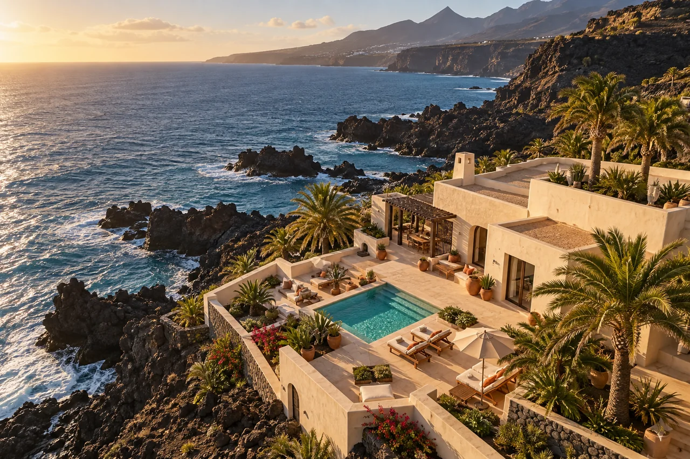

Concepto ilustrativo / Turismo y alojamientos
Una estancia empieza antes de llegar.
Una dirección creativa para que un alojamiento cuente su experiencia y facilite el camino hacia la consulta directa.

La oportunidad
Hacer que el visitante entienda el entorno, las habitaciones y lo que hace especial la estancia. Una web clara puede reunir esa información y conducir a una consulta o a un motor de reservas ya existente.
Qué construiríamos
- Una sesión de fotografía y vídeo para mostrar espacio, detalles y entorno. Las tomas aéreas se valoran según viabilidad.
- Una web rápida con habitaciones, servicios, preguntas frecuentes y acceso a la reserva.
- Piezas verticales que conecten redes sociales con la página adecuada.
- Registro de consultas y recordatorio de seguimiento, si se acuerda la integración.
Dónde encaja la IA
La IA puede ayudar a preparar borradores de respuestas usando solo información aprobada del alojamiento. Los precios, la disponibilidad y las condiciones deben venir del sistema de reservas; no se inventan ni se confirman desde un modelo.
Qué mediríamos
Consultas recibidas, clics al motor de reservas y reservas directas confirmadas, cuando se disponga de esa medición. Comparar periodos equivalentes y separar estacionalidad e inversión publicitaria.
Un punto de partida
Una web puntual desde 1.200 € o un alcance adaptado al plan Impulso. Motor de reservas, pasarela y suscripciones se cotizan aparte.
Este es un escenario creativo, no un caso de éxito. No presenta resultados, ventas ni testimonios reales.
Quiero algo así para mi negocio